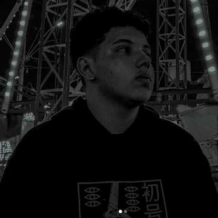

Hello, my name is Evandro; I am a Computer Science student at UFS and have been passionate about technology since I was a child. My journey with technology began when I was eight and used my mother's computer; this sparked an interest in understanding how to create games using GameMaker. I was fascinated by the concept, even though I didn't fully grasp the underlying code at the time.
At 16, I started learning some HTML and CSS during school breaks and fell in love with the idea of building websites. Then, at 18—in 2024—I took the university entrance exam and enrolled in the Computer Science program, where I discovered what programming is truly about, began studying concepts in depth, and increased my practical work.I am currently 20 years old, studying Machine Learning and working on projects involving Python and web development.